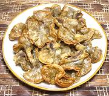

|
Chicharong BulaklakPhilippine - Chicharong Bulaklak | ||||
| Serves: Effort: Sched: DoAhead: |
6 app *** 1-1/4 hrs Yes |
This deep fried appetizer or pulutan (beer food) is a specialty of the Philippines, and highly thought of there. It is generally served with a dip made of vinegar, garlic and salt. | |||
| Bulaklak means "flower", from the shape. The finished product is a bit oily, but not as fatty as you might expect - most of the fat has been rendered out. | |||||
|
|
1-3/4 3 ar ar |
# T |
Ruffle Fat (1) Salt Water Oil for deep fry |
Prep - (45 min - 5 minutes work)
|